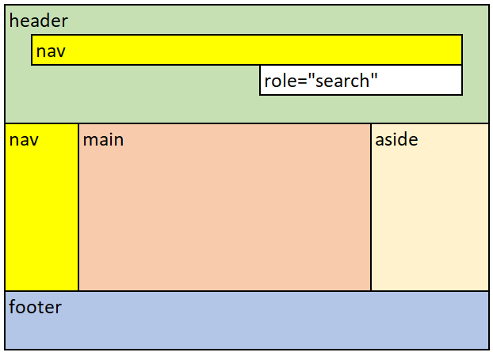

Les points de repère, également appelés « régions de page », permettent aux utilisateurs du lecteur d’écran de repérer les sections importantes d’une page Web et de naviguer directement vers celles-ci en omettant des blocs de contenu. Lorsque vous introduisez des points de repère, assurez-vous que tout le contenu de la page est inclus dans un point de repère, car il est facile de manquer du contenu à l’extérieur d’un point de repère.
Identifiez les régions de la page avec des éléments de section HTML5 ou des attributs de rôle de points de repère ARIA.
| Élément de section HTML5 | Rôles de points de repère ARIA | Région |
|---|---|---|
<header> lorsqu’enfant de <body>
|
role="banner"
|
Banner (En-tête) – région du haut de chaque page qui contient des renseignements comme le logo et les options de recherche et de navigation. |
<footer>
|
role="contentinfo"
|
Contentinfo (aka Footer) (informations sur le contenu, alias Pied de page) – partie inférieure de chaque page qui contient des renseignements relatifs aux droits d’auteur ou à la protection des renseignements personnels, ou les avis de non-responsabilité. |
<main>
|
role="main"
|
Main (Contenu principal) – région du contenu principal d’une page. |
<nav>
|
role="navigation"
|
Menu de navigation |
<aside>
|
role="complementary"
|
Complementary (complémentaire) – régions qui appuient le contenu principal et qui sont distinctes et importantes, comme une note expliquant le contenu principal. |
| n/a |
role="search"
|
Search (Recherche) – région qui contient un ensemble d’éléments et d’objets qui, dans leur ensemble, se combinent pour créer une fonction de recherche. |
<form>
|
role="form"
|
Form (Formulaire) – une région qui contient une collection d’éléments et d’objets qui, dans leur ensemble, se combinent pour créer un formulaire. |
<section> lorsqu'il est nommé
|
role="region"
|
Region L’élément <section>, lorsqu'il est nommé, représente une section indépendante d’un document qui n’a pas un élément sémantique plus spécifique pour le représenter. Les sections doivent toujours avoir des entêtes, sauf dans quelques exceptions.
|
Dans cet exemple, les éléments de section HTML5 définissent les points de repère, pour la plupart. L’attribut role="search" est unique et descriptif.
L'exemple commence

L'exemple finit
HTML
Début du code
<header>
<nav aria-label="global">[…]</nav>
<form role="search">[…]</form>
</header>
<div>
<nav aria-label="principal">[…]</nav>
<main>[…]</main>
<aside>[…]</aside>
</div>
<footer>[…]</footer>
Fin du code
Ci-dessous, le balisage HTML utilise des attributs de rôle de point de repère ARIA pour identifier les régions.
HTML
Début du code
<div role="banner">
<div role="navigation" aria-label="global">[…]</div>
<form role="search">[…]</form>
</div>
<div>
<div role="navigation" aria-label="principal">[…]</div>
<div role="main">[…]</div>
<div role="complementary">[…]</div>
</div>
<div role="contentinfo">[…]</div>
Fin du code
<header> comme enfant de <body>, ou role="banner". Un <header> n’est pas considéré comme une bannière lorsqu’il s’agit de l’enfant de <article>, <aside>, <main>, <nav> ou <section>.<footer><main><body>:
<header> (quand il s’agit de la bannière)<footer><main><nav> aux navigations primaires et secondaires.
aria-label ou aria-labelledby pour différencier plusieurs éléments <nav>.aria-labelledby l’attribut pour étiqueter une <nav> région qui commence par un élément d’en-tête.role="search" plutôt que role="form" lorsque le formulaire est utilisé pour la fonction de recherche.<form> est nommé (utilisant aria-label, aria-labelledby ou un title attribut), il sera désigné comme point de repère.role="form", fournissez un nom bref (utilisant aria-label, aria-labelledby ou un title attribut) qui décrit l’objectif du formulaire.<section> est nommé (utilisant aria-label, aria-labelledby ou un title attribut), il sera designé comme point de repère.role="region", fournissez un nom bref (utilisant aria-label, aria-labelledby ou un title attribut) qui décrit l’objectif du contenu dans la région.